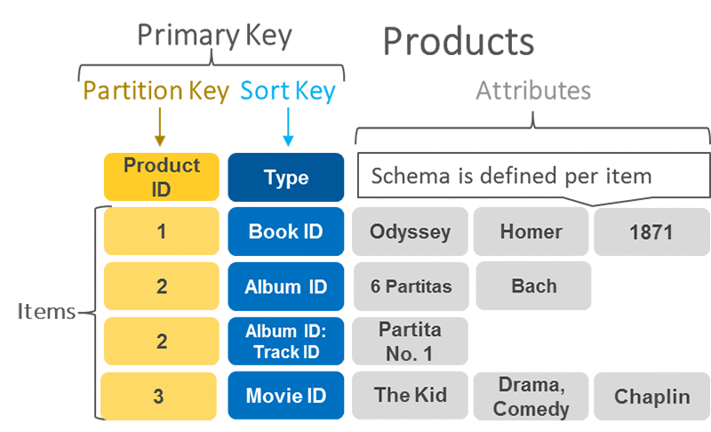

In this post, we’ll try to familiarize ourselves with Amazon’s DynamoDB database and the famous single table design.
Coming from the relational world, DynamoDB looks like a strange beast at first (it’s a NoSQL database after all) and
definitely has a steep learning curve, hopefully this introduction will make things easier.
We’ll try to write a simple Spring Boot rest api which uses DynamoDB under the hood, so that we’ll get a chance to see
how everything looks in practice.
What is DynamoDB?
DynamoDB is a managed NoSQL, key-value database offered by AWS, designed to run high-performance applications at any scale.
DynamoDB offers an HTTP api, and it integrates seamlessly with AWS lambda for example.
DynamoDB offers consistent performance, regardless of scale. You can expect the same latency when you have 5GB of data and nothing will change when you have 1TB of data.
In DynamoDB, data is stored in tables, but it looks nothing like a relational database.
The biggest difference from a relational database is that AWS recommends using a single DynamoDB table for all your data,
also known as the single table design. Yes, you’ve read that right. When using DynamoDB your application/microservice will store all its data in a single table.
Sounds shocking but that’s the most performant and cost-effective approach.
This effectively means that data modeling in DynamoDB is way trickier that in a relational database.
Data modeling in DynamoDB is tied to the data’s access patterns. In order to design a DynamoDB table, first you need to know how that data will be fetched by an application.
The idea is that in DynamoDB, you can’t write arbitrary queries which will do any projections, aggregations and filtering you like. This makes DynamoDB unusable for analytics, but it’s not an issue
since DynamoDB was designed to be an OLTP database.
DynamoDB doesn’t support joins (like relational databases do). So there’s no point in scattering the data around multiple tables, since you won’t be able to join them.
Also you can forget about data normalization (because now you’re dealing with a single table after all).
That’s the rationale of single-table-desing.
DynamoDB table anatomy
A DynamoDB table is basically a collection of items. An item is pretty much the same thing as a row in a relational database.
An item consists of a primary key and a bunch of attributes. Coming back to our relational database analogy, an attribute is a column. The difference is that
every item can have its own list of attributes. Not only the number of attributes for a given item can vary, also do their
types (as opposed to a relational database where every row has exactly the same number of columns.)
The primary key is the most interesting part of a DynamoDB table. A primary key uniquely identifies an item in a table, and it must be defined at the creation of the table.
There are two types of primary key: a simple primary key made up of just a partition key, and a composite primary key made up of a partition key and a sort key.
Designing a good DynamoDB table is basically picking the right partition and sort keys.
Let’s look more closely at the 2 types of primary keys:
Simple primary key: as mentioned before, this is when we have a table with a partition key, but no sort key. Is this case, the only option to fetch an item is by knowing the
exact value of the partition key (well, another option is to do a table scan, where we scan the entire table item-by-item, but this is not very cost-effective).
When using just the partition key, DynamoDB basically looks like a plain key-value NoSQL database like redis and a good use-case for this approach is when we use DynamoDB
as a session store for example.
Composite primary key: the primary key is composed of both a partition key and a sort key. This is where the DynamoDB shines.
Using this approach it’s possible to pretty much model any OLTP use-case. The idea here is that there are more options to fetch an item. With this approach now it’s possible to fetch an entire
collection of items. To fetch a single item we still need to know the exact values of a partition key and a sort key. The nice part is that when we want to fetch a collection of items,
we need to know the exact value of a partition key, but only a substring of the sort key. Sounds confusing but this will make sense in a bit.

Also it’s worth mentioning that good partition and sort keys should have high cardinality. DynamoDB looks like a hash map after all, so same principles apply here as well.
An odd piece of advice is that when using the single-table-design, good partition and sort key types are strings. These are the most versatile types our there. Though it sounds confusing, it’ll make sense
in a bit.
While creating the DynamoDB table, we’ll need to configure the read & write capacity units (sometimes they’re called read request units and write request units).
That’s basically a way to provision the maximum throughput of our database.
Here’s what these capacity units mean:
One read capacity unit gives us:
A strongly consistent read request of an item up to 4 KB.
Two eventually consistent reads of an item up to 4 KB.
One write capacity units gives us:
One write per second for an item up to 1 KB in size.
Strongly and eventually consistent reads basically mean the read-your-own-writes semantics. For example if we write something to DynamoDB and instantly try to fetch the item we just wrote
can produce different results depending on the read type we use. A strongly consistent read will guarantee that we’ll see the item we’ve just wrote. A eventually consistent read will not (well, after a
small delay we will see the item).
If we do a bit of math, a table with 5 read capacity units (RCUs) can handle either 5 strongly consistent reads per second (with 4KB of data each) or for example a single strongly consistent read which fetches 20KB of data.
For eventually consistent reads, 5 RCUs give us 10 reads per second (with 4KB of data each).
Pretty much the same thing for writes. 5 Write capacity units (WCUs) give us 5 writes per second (with 1KB of data each) or a single write per second (with 5KB of data).
RCUs and WCUs are also intertwined with transactions, but in this post we won’t discuss them.
Exceeding these limits will result in an HTTP 400 code (Bad Request) and a ProvisionedThroughputExceededException.
The application we’re going to build
Since we’ve familiarized ourselves with a bit of theory about DynamoDB, let’s try to build a simple application with it.
We’re going to build a Spring Boot rest API, for a simple online forum, using single-table-design. To make things more clear,
here’s an example of a entity-relationship diagram for our database:
If we were to use a relational database, every entity from the above diagram would’ve had its own table, but since we’re using
DynamoDB we’re going to store all that data into a single table.
Creating the project
Let’s create the project skeleton. For that we’ll go to https://start.spring.io and we’ll
select the following dependencies:
We’ll also add the AWS DynamoDB SDK. For that we’ll edit our pom.xml and add the following additional dependencies:
<?xml version="1.0" encoding="UTF-8"?><projectxmlns="http://maven.apache.org/POM/4.0.0"xmlns:xsi="http://www.w3.org/2001/XMLSchema-instance"xsi:schemaLocation="http://maven.apache.org/POM/4.0.0 https://maven.apache.org/xsd/maven-4.0.0.xsd"><!-- Omitted for brevity --><properties><java.version>17</java.version><awssdk.version>2.20.2</awssdk.version></properties><dependencies><!-- Omitted for brevity --><dependency><groupId>software.amazon.awssdk</groupId><artifactId>dynamodb</artifactId><version>${awssdk.version}</version></dependency><dependency><groupId>software.amazon.awssdk</groupId><artifactId>dynamodb-enhanced</artifactId><version>${awssdk.version}</version></dependency><!-- Omitted for brevity --></dependencies></project>
Local env setup
In order to get a chance to fiddle with DynamoDB, we need a database instance. There are many approaches we can use, like
the real thing from AWS (which costs a bit of money), or using Localstack or even embedded DynamoDB. In this post we’re going to stick with Localstack.
Given that, we’ll run Localstack as a docker container, let’s take a look at our docker-compose.yaml file, shown below:
We have a single docker container using the localstack/localstack:1.4 docker image. Let’s also note that there’s a volume called ./dynamodb:/etc/localstack/init/ready.d.
In the ./dynamodb directory (located in the same folder as our docker-compose.yaml), we have a bunch of shell scripts which are called at initialization phase of Localstack,
which gives us a chance to create the resources we’re going to use. In our case that’ll be our DynamoDB table.
Specifically, we have a create-table.sh shell script which looks like the following:
The above shell script creates a DynamoDB table, named forum with a partition key named PK of type string, and a sort key named SK, also of type string.
The table is located in the eu-west-1 region and has 5 read and write capacity units.
Good stuff. Now let’s try to run our docker-compose.yaml file with the following command:
1
$ docker-compose up
We expect that not only localstack will start, but also that our single DynamoDB table will be created. We can check
that the table was indeed created either by looking at the localstack's logs, or by listing the DynamoDb tables using the
AWS cli, like shown below:
If the table was indeed created, we should get the following output:
1
2
3
4
5
{"TableNames":["forum"]}
Designing the DynamoDB table around our access patterns
We’ve mentioned that the recommended way to use DynamoDB is via the single-table-design and that the best way is to model
our data around our access patterns. So let’s do that.
Since we’re writing a simple rest api for an online forum, our access patterns will look something like this:
### Get all categories
GET {{host}}/api/v1/categories
HTTP/1.1 200
Content-Type: application/json
[
{
"id": "ba97318-8688-46bc-a945-87c187fc20c2",
"name": "Anime"
},
{
"id": "0f8aacc6-dce1-4df2-1529-d9f3fec10dc2",
"name": "Software development"
}
]
1
2
3
4
5
6
7
8
### Get category by id
GET {{host}}/api/v1/categories/{{sofwareCategoryId}}
Content-Type: application/json
{
"id": "0f8aacc6-dce1-4df2-1529-d9f3fec10dc2",
"name": "Software development"
}
Given our access patterns, our single DynamoDB table can look like this:
Let’s take a closer look at our single table design and our access patterns.
Get category by id
1
2
### Get category by id
GET {{host}}/api/v1/categories/{{sofwareCategoryId}}
We get the sofwareCategoryId as a path parameter and we can use it to make our partition and sort keys, which in this particular case are equal.
In order to actually fetch the category, we’ll use the GetItem operation and
we’ll need to prefix the partition and the sort key with the Category# string, like shown below:
We’ll get to the Java version of this operation in a bit.
Get all categories
1
GET {{host}}/api/v1/categories
This request is a bit more difficult since we don’t have any data from which we can construct the partition and the sort key, and as we remember we need at least the exact value of the
partition key and a substring of the sort key in order to fetch anything. In this case one option would be to do a table scan, an operation which usually should be
avoided like a plague. This is because the table scan actually scans the whole table, item-by-item and since we have all the data into a single table, the amount of the data scanned would be
pretty significant.
That’s one downside of DynamoDB is that operations like findAll() are difficult to implement, so it’s worth considering if this operation is actually needed.
In our case it is. When scanning the table, we actually need to do a bit of filtering as well since we’re interested only
in categories, so we’ll have to look at the sort keys and check if they have the Category# prefix.
Here’s how a table scan looks like:
We’ll also see at the Java version in the next section.
Get topics of a category
1
2
### Get topics of a category
GET {{host}}/api/v1/categories/{{sofwareCategoryId}}/topics
This is an interesting one. Effectively this is a one-to-many relationship, since a category has many topics.
The idea is that our REST endpoint receives only the categoryId and somehow using it we need to fetch all topics for that category.
Here’s the data we’re interested in, highlighted in red:
The idea here is that we can use the query operation of DynamoDB, and here we can specify the exact value of the partition key (Category#4f0a4c06-6c11-4df2-9529-a993fec005c1) and we know the
sort key prefix (Topic# in our case).
{"Items":[{"createdAt":{"S":"2023-04-24T13:27:08.975920875Z"},"SK":{"S":"Topic#0f8aacc6-dce1-4df2-1529-d9f3fec10dc2"},"PK":{"S":"Category#4f0a4c06-6c11-4df2-9529-a993fec005c1"},"title":{"S":"Java 19 released"},"userName":{"S":"mike"},"tags":{"L":[{"S":"NSFW"},{"S":"TRIGGER_WARNING"}]}},{"createdAt":{"S":"2023-04-24T13:29:08.0Z"},"SK":{"S":"Topic#ff8aacc6-fce1-fdf2-ff29-ff9f3fecffdcf"},"PK":{"S":"Category#4f0a4c06-6c11-4df2-9529-a993fec005c1"},"title":{"S":"DynamoDB is fun"},"userName":{"S":"john"},"tags":{"L":[]}}],"Count":2,"ScannedCount":2,"ConsumedCapacity":null}
We’ll also see at the Java version in the next section.
That’s pretty much the idea for all one-to-many relationships. We need to know only the exact value of the partition key and the prefix of the sort key (the begins_with(SK, :sort_key_prefix) function
takes care of the rest). Remember in the introduction section we’ve mentioned that the string type is the most suitable for partition and sort keys? We just saw the answer to the question why is that.
Because we can embed in the partition/sort key the type of the entity we’re dealing with as a prefix (like the Category# or the Topic# prefixes, and use this prefix to filter our the items we want
to receive).
Get comments of a topic
Getting the comments of a topic is pretty similar to getting topics of a category.
1
GET {{host}}/api/v1/categories/{{sofwareCategoryId}}/topics/{{topicId}}/comments
We’re interested in the items highlighted in red. Notice that for a comment, the partition key has the format Topic#{{topicId}} and the
sort key has the Comment# prefix, so we’ll do the same thing, execute the query operation with the exact value of
the partition key and the sort key prefix of Comment#.
Now let’s get to the business. For our rest api we’ll need to configure a bunch of custom properties, so that the AWS SDK
will connect to our localstack docker container. Here’s our properties:
The most interesting part here probably is the usage of the aws.endpoint-override property, which makes our DynamoDB clients
actually connect to localstack and not to the AWS endpoints. If we indend to actually connect to AWS, the aws.endpoint-override
should be removed or commented out.
Creating the Category entity
As we saw in the data modelling section, we’re using composite primary keys, so all of our items will have a partition and a sort key.
It can be helpful to create a superclass of all of our entities, which will declare the
partition and the sort keys, like shown below:
Notice the nested CategoryKeyBuilder class. It’s a little helper class which will come in handy when we’ll need to set the partition and the sort key, with the right prefixes.
We’ll also need to adjust a bit our DynamoDbConfig class, so that we declare our newly-created entity there as a table, like shown below:
1
2
3
4
5
6
7
8
9
10
@Configuration(proxyBeanMethods=false)@EnableConfigurationProperties(AwsProperties.class)publicclassDynamoDbConfig{//Omitted for brevity
@BeanpublicDynamoDbTable<Category>categoryTable(DynamoDbEnhancedClientdynamoDbEnhancedClient,AwsPropertiesproperties){returndynamoDbEnhancedClient.table(properties.dynamoDbTableName(),TableSchema.fromBean(Category.class));}}
Now we’re finally ready to implement our DynamoDBCategoryRepository, which is presented below:
Nothing fancy here. We’ve injected our DynamoDbTable<Category> declared in the DynamoDbConfig and we use it to execute the needed DynamoDB operations, like PutItem to create items,
GetItem to fetch a single item and the Scan to find all categories.
We won’t show the rest of the plumbing, like injecting this repository into a service and the injecting that service into a controller. This part is pretty obvious, and all the code will be available
on GitHub.
publicenumTopicTag{NSFW,VIOLENCE,GAMBLING,TRIGGER_WARNING}@DynamoDbBean@EqualsAndHashCode(callSuper=true)publicclassTopicextendsDynamoDbBase{publicstaticfinalStringTOPIC_PK_PREFIX="Category#";publicstaticfinalStringTOPIC_SK_PREFIX="Topic#";privateStringtitle;privateStringuserName;privateInstantcreatedAt;privateList<TopicTag>tags;publicTopic(){}publicTopic(TopicBuilderbuilder){this.title=builder.title;this.userName=builder.userName;this.createdAt=builder.createdAt;this.tags=builder.tags;this.partitionKey=builder.partitionKey;this.sortKey=builder.sortKey;}@DynamoDbIgnorepublicStringgetId(){returngetSortKey().substring(TOPIC_SK_PREFIX.length());}publicvoidsetId(Stringid){this.sortKey=TopicKeyBuilder.makeSortKey(id);}publicStringgetCategoryId(){returngetPartitionKey().substring(TOPIC_PK_PREFIX.length());}//the rest of the getters & setters
publicstaticTopicBuilderbuilder(){returnnewTopicBuilder();}publicstaticclassTopicBuilder{privateStringtitle;privateStringuserName;privateInstantcreatedAt;privateStringpartitionKey;privateStringsortKey;privateList<TopicTag>tags;publicTopicBuildertitle(Stringtitle){this.title=title;returnthis;}publicTopicBuilderuserName(StringuserName){this.userName=userName;returnthis;}publicTopicBuildercreatedAt(InstantcreatedAt){this.createdAt=createdAt;returnthis;}publicTopicBuildertags(List<TopicTag>tags){this.tags=tags;returnthis;}publicTopicBuilderpartitionKey(StringpartitionKey){this.partitionKey=partitionKey;returnthis;}publicTopicBuildersortKey(StringsortKey){this.sortKey=sortKey;this.gsi1SortKey=sortKey;returnthis;}publicTopicBuildercategoryId(StringcategoryId){this.partitionKey=TopicKeyBuilder.makePartitionKey(categoryId);returnthis;}publicTopicbuild(){returnnewTopic(this);}}publicstaticclassTopicKeyBuilder{publicstaticStringmakePartitionKey(Stringid){returnTOPIC_PK_PREFIX+id;}publicstaticStringmakeSortKey(Stringid){returnTOPIC_SK_PREFIX+id;}}}
Apart from this, we’ll need to adjust our DynamoDbConfig class again and register the Topic entity as a table, as shown below:
1
2
3
4
5
6
7
8
9
10
11
12
13
14
15
@Configuration(proxyBeanMethods=false)@EnableConfigurationProperties(AwsProperties.class)publicclassDynamoDbConfig{//Ommitted for brevity
@BeanpublicDynamoDbTable<Category>categoryTable(DynamoDbEnhancedClientdynamoDbEnhancedClient,AwsPropertiesproperties){returndynamoDbEnhancedClient.table(properties.dynamoDbTableName(),TableSchema.fromBean(Category.class));}@BeanpublicDynamoDbTable<Topic>topicTable(DynamoDbEnhancedClientdynamoDbEnhancedClient,AwsPropertiesproperties){returndynamoDbEnhancedClient.table(properties.dynamoDbTableName(),TableSchema.fromBean(Topic.class));}}
It looks kind of strange, the code presented above looks like we have 2 DynamoDB tables, right? That’s not true though.
We have a single table because we’ve used the same table name for both of them and this is just a way to tell the AWS SDK
the schema of the entities we’re using, so that it can do the mapping of the DynamoDB API responses.
And finally, here’s how our TopicRepository looks like:
It’s not too complex either. To create topics we use the PutItem operation, to fetch all topics for a category we use the
Query operation and specify the exact value of the partition key and the sort key prefix and finally we use the GetItem
operation to fetch the topic by its id (in this case by specifying the exact values of partition and the sort key).
Creating the Comment entity
The Comment entity looks similar to the Topic entity. Let’s take a look:
Basically we have comment-specific attributes along with the helper CommentKeyBuilder. Apart from this, we’ll need to
adjust one more time the DynamoDbConfig so that we declare the Comment entity, like shown below:
@Configuration(proxyBeanMethods=false)@EnableConfigurationProperties(AwsProperties.class)publicclassDynamoDbConfig{//same as in previous examples
@BeanpublicDynamoDbTable<Category>categoryTable(DynamoDbEnhancedClientdynamoDbEnhancedClient,AwsPropertiesproperties){returndynamoDbEnhancedClient.table(properties.dynamoDbTableName(),TableSchema.fromBean(Category.class));}@BeanpublicDynamoDbTable<Topic>topicTable(DynamoDbEnhancedClientdynamoDbEnhancedClient,AwsPropertiesproperties){returndynamoDbEnhancedClient.table(properties.dynamoDbTableName(),TableSchema.fromBean(Topic.class));}@BeanpublicDynamoDbTable<Comment>commentTable(DynamoDbEnhancedClientdynamoDbEnhancedClient,AwsPropertiesproperties){returndynamoDbEnhancedClient.table(properties.dynamoDbTableName(),TableSchema.fromBean(Comment.class));}}
And finally, the CommentRepository looks like this:
Probably the most interesting method here is the likeComment, which is used to increment by one the likeCount attribute.
Here we’ve used the DynamoDbClient class, which is a bit more lower-lever than DynamoDbTable. It’s just an example,
but it’s worth mentioning that DynamoDbClient has more operations than DynamoDbTable, so it’s necessary to resort to it at times.
Implementing additional access patterns with Global secondary indexes
So far we’ve implemented quite a lot of access patterns. We can list all categories, get a category by its id, list the topics for a given category,
we can also get the topic by its id or even add tags to an existing topic. We can get the comments for a particular topic and we can like a comment.
What if we’d like to find all the topics which were created by a particular user? Given our current database model, the only option
to achieve that is by doing a table scan, which we mentioned that it’s a terrible idea.
A better option to do that is via Global secondary indexes. A global secondary index is an index which allows us to use
a completely different set of partition and sort keys to access our data. Also an important thing to point out is that the
global secondary index needs to be provisioned separately (meaning it has its own RCUs and WCUs). Also compared to the DynamoDB table,
the global secondary index allows only eventually consistent reads.
In order to create the global secondary index at table creation time, we’ll need to adjust our localstack initialization shell-script like this:
The above command created a global secondary index named forum-gsi with the partition key named GSI1PK and the sort key GSI1SK, and the provisioned throughput of 10 RCUs and 10 WCUs.
Now we can adjust a bit our DynamoDbBase superclass, so that the new set of partition and sort key is added. It will look something like this:
This effectively means that every item from our DynamoDB table will have 2 sets of primary keys:
The PK partition key and a sort key named SK
The GSI1PK partition key and a sort key named GSI1SK, both of which come from the global secondary index (or GSI).
We can query items either using the main primary key (the PK partition key and the SK sort key) or the one from the GSI (the GSI1PK partition key and the GSI1SK sort key).
Revisiting the single table design
Let’s take another look at our DynamoDB table, after the global secondary index was added. It will look something like this:
Notice the values of GSI1PK and GSI1SK, which form our new primary key. So, in order to fetch all topics created by the user mike for example,
we’ll need to query our global secondary index and use the User#mike as the partition key and the Topic# prefix as the sort key.
Or in other words, we just fetched the data highlighted in red:
In order to implement this operation in Java, we’ll need to adjust our Topic entity a bit, so that it sets proper values for the GSI1PK partition key and the GSI1SK sort key,
like shown here:
@DynamoDbBean@EqualsAndHashCode(callSuper=true)publicclassTopicextendsDynamoDbBase{publicstaticfinalStringTOPIC_PK_PREFIX="Category#";publicstaticfinalStringTOPIC_SK_PREFIX="Topic#";publicstaticfinalStringUSER_GSI1_PK_PREFIX="User#";privateStringtitle;privateStringuserName;privateInstantcreatedAt;privateList<TopicTag>tags;publicTopic(){}publicTopic(TopicBuilderbuilder){this.title=builder.title;this.userName=builder.userName;this.createdAt=builder.createdAt;this.tags=builder.tags;this.partitionKey=builder.partitionKey;this.sortKey=builder.sortKey;this.gsi1SortKey=builder.gsi1SortKey;this.gsi1PartitionKey=builder.gsi1PartitionKey;}@DynamoDbIgnorepublicStringgetId(){returngetSortKey().substring(TOPIC_SK_PREFIX.length());}publicvoidsetId(Stringid){this.sortKey=TopicKeyBuilder.makeSortKey(id);this.gsi1SortKey=TopicKeyBuilder.makeSortKey(id);}publicStringgetCategoryId(){returngetPartitionKey().substring(TOPIC_PK_PREFIX.length());}//the rest o the getters & setters
publicstaticTopicBuilderbuilder(){returnnewTopicBuilder();}publicstaticclassTopicBuilder{privateStringtitle;privateStringuserName;privateInstantcreatedAt;privateStringpartitionKey;privateStringsortKey;privateStringgsi1PartitionKey;privateStringgsi1SortKey;privateList<TopicTag>tags;publicTopicBuildertitle(Stringtitle){this.title=title;returnthis;}publicTopicBuilderuserName(StringuserName){this.userName=userName;this.gsi1PartitionKey=USER_GSI1_PK_PREFIX+userName;returnthis;}publicTopicBuildercreatedAt(InstantcreatedAt){this.createdAt=createdAt;returnthis;}publicTopicBuildertags(List<TopicTag>tags){this.tags=tags;returnthis;}publicTopicBuildergsi1PartitionKey(Stringgsi1PartitionKey){this.gsi1PartitionKey=gsi1PartitionKey;returnthis;}publicTopicBuildergsi1SortKey(Stringgsi1SortKey){this.gsi1SortKey=gsi1SortKey;returnthis;}publicTopicBuilderpartitionKey(StringpartitionKey){this.partitionKey=partitionKey;returnthis;}publicTopicBuildersortKey(StringsortKey){this.sortKey=sortKey;this.gsi1SortKey=sortKey;returnthis;}publicTopicBuildercategoryId(StringcategoryId){this.partitionKey=TopicKeyBuilder.makePartitionKey(categoryId);returnthis;}publicTopicbuild(){returnnewTopic(this);}}publicstaticclassTopicKeyBuilder{publicstaticStringmakePartitionKey(Stringid){returnTOPIC_PK_PREFIX+id;}publicstaticStringmakeSortKey(Stringid){returnTOPIC_SK_PREFIX+id;}}}
And here’s how our TopicRepository will look like:
Notice that this time we’re querying the data from the global secondary index, not the table. That’s pretty much the biggest difference (well, apart from the fact that the query
will always be eventually consistent).
Conclusion
In this blog post we’ve made a gentle introduction to DynamoDB, which is a NoSQL key-value managed database, designed for OLTP workloads and
which offers consistent performance, regardless of scale.
We took a glance at the AWS's recommended approach to using DynamoDB - the single table design, and we saw that data modelling in DynamoDB is way trickier than in
traditional relational databases. The single table’s data model is done after collecting the data’s access patterns, and we saw that the global secondary indexes are a handy tool
to accommodate more access patterns.
It’s also worth mentioning that a big disadvantage is that after the table was designed, it can be quite difficult to add or change new access patterns, so some careful design upfront is
definitely needed.
The example code we used in this article can be found on GitHub.